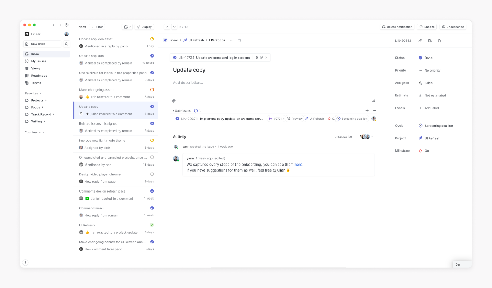
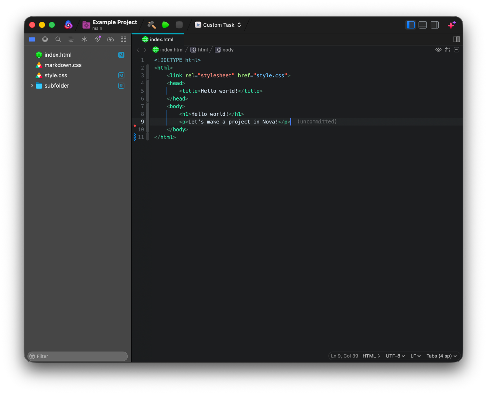
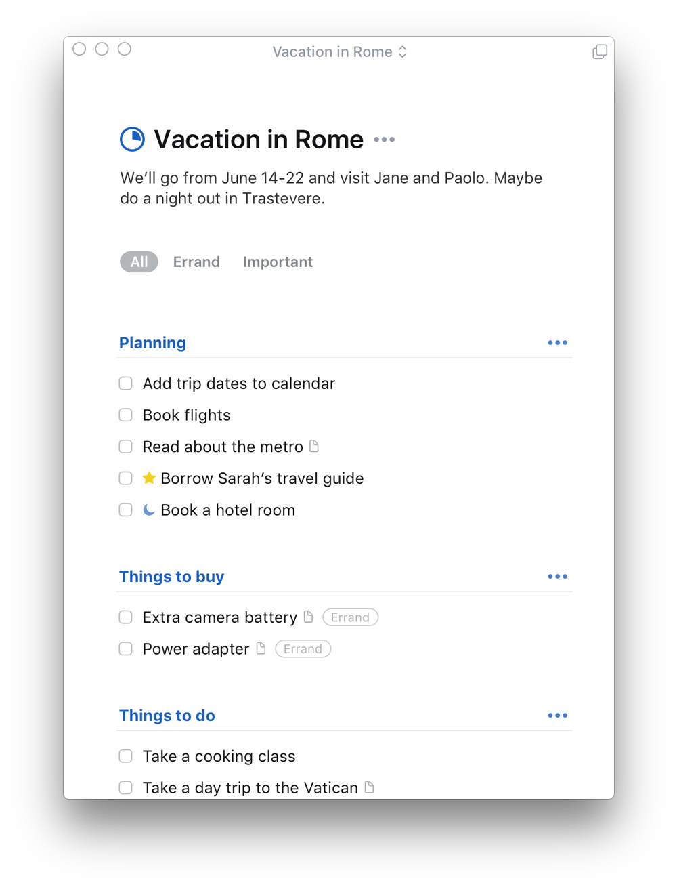
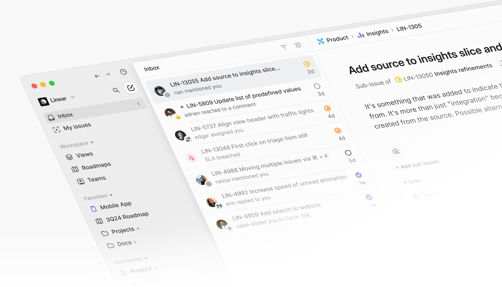

Linear：一致的界面骨架
工具栏与侧栏形成稳定边界；列表、详情和属性使用不同层级。对齐关系贯穿多个视图，界面不需要用大量卡片解释结构。
采用：固定基线、分层文字、列表与详情的连续关系。调整：Git 需要更密集的引用和代码空间，不直接照搬任务管理器。
官方重设计文章示例仓库 atlas；提交、暂存、同步与子模块操作均为页面内演示。当前展示设计体系，尚未应用到 MyGo 客户端。
关注真实软件如何组织长期工作：同一个对象在不同页面如何被识别、操作如何保持位置、复杂度如何分层。以下截图为公开产品资料，保留来源；仅作研究参考。

工具栏与侧栏形成稳定边界；列表、详情和属性使用不同层级。对齐关系贯穿多个视图，界面不需要用大量卡片解释结构。
采用：固定基线、分层文字、列表与详情的连续关系。调整：Git 需要更密集的引用和代码空间，不直接照搬任务管理器。
官方重设计文章
项目身份、当前分支、工具动作在顶部。侧栏和编辑器各自有稳定边界，代码拥有最大的连续阅读面。
采用：仓库身份常驻、面板工具就近放置、代码阅读面独立。调整：把 Git 写操作放回具体对象旁，避免工具栏堆满所有命令。
官方工作区文档
有内容的标题、安静的分组线、明确的任务行。列表在展开更多信息时仍保留原来的阅读顺序。
采用：分组有留白、操作跟随当前对象、行内信息按重要性分层。调整：Git 的 SHA、状态和父关系需要显式列，不能简化成待办列表。
官方 Mac 功能展示
两套稿共用 Git 语义，但各自完整定义窗口、字体、控件、分栏和状态。所有页面复用同一套组件；切换风格时，历史、工作区、子模块和确认框一起改变。
设计站检索中的 Dribbble 和 Behance 页面本次访问受限，没有将未看到的作品作为视觉依据。营销网站的发光、渐变和大标题也没有直接移入软件。
下表是本轮提案的具体设计值。它们是针对 Git 工作流的取舍，不是从参考产品猜测出的尺寸。
| 维度 | 曲面书桌 | 精密工作台 |
|---|---|---|
| 窗口与导航 | 项目侧栏融入外壳，主内容成为一张连续工作面；功能入口在侧栏。 | 独立命令栏和横向功能页签；左侧仅保留引用或对象索引。 |
| 字体 | 系统界面字体，中文 PingFang SC；标题 19 / 600，正文 13，辅助 12。 | Helvetica Neue / PingFang SC；标题 15 / 600，正文 12，辅助 11。表头强调列关系。 |
| 代码 | SFMono-Regular / Menlo / Consolas；代码 12px、行高 23px；SHA 11px。等宽字只用于代码、路径与对象标识。 | |
| 空间 | 8px 间距节奏；普通行 36px；工具栏 44px；外壳与内容之间 8px 间隙。 | 4px 间距节奏；普通行 28px；工具栏 34px；面板边界直接相接。 |
| 控件形态 | 按钮 7px 圆角，输入 7px，弹窗 14px；主动作实心，次动作轻边界。 | 按钮、输入 3px，弹窗 6px；按钮组与面板工具栏有明确框线。 |
| 选中 | 侧栏内缩圆角选区；列表柔和整行底色，加实线标记和 aria-pressed。 | 索引列表铺满选区；2px 左标记，文字加重，属性列保持对齐。 |
| 历史构图 | 上方宽线图；下方文件与差异并排。提交说明在历史与审阅的衔接处。 | 中间历史与提交属性上下排列；右侧完整差异列；比较提交与代码更直接。 |
| 提交构图 | 文件清单与提交编辑器在左，右侧保留连续 Diff。 | 文件索引独立，Diff 为主面；提交编辑器固定在 Diff 底部。 |
| 子模块 | 父 HEAD、Index、当前检出始终分别命名。内部修改独立提示。指针更新与检出是两个动作；执行前展示对象和目标。 | |
| 颜色职责 | 交互强调色只表示选择、焦点与主要动作；Diff 红绿只表示增删；警告带图标和文字。历史分支使用独立固定色与直接标签，不随过滤重排。 | |
| 边界与阴影 | 用表面区分外壳和内容；分栏线弱化；阴影只给窗口与浮层。 | 面板有明确 1px 分隔；内容零阴影；浮层保留一层阴影。 |
| 状态与反馈 | 聚焦有外轮廓；禁用说明条件；加载保留原对象位置；错误说明失败对象并提供重试；空状态说明下一步；弹窗主动作写清目标。 | |
| 动作层级 | 仓库级同步常驻顶部；文件／片段暂存在审阅处；对象操作放到详情；删除等重要操作需对象确认。可在设计稿的“控件与状态”页检查。 | |
仓库切换与分支身份、标题栏、对象行、文件状态、属性表、按钮、输入、分段控件、提示条和确认框都有共享实现。两套稿通过各自的规则和构图生成，不为每个页面另画一种组件。
本轮范围为风格验证：历史、工作区、子模块、分支和状态样本。冲突、Stash、Worktree、仓库入口等后续页面应沿用选定体系；本稿没有冒充完成全部产品流程。